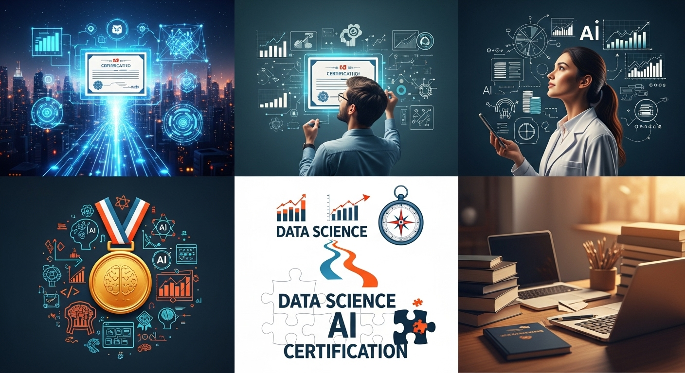
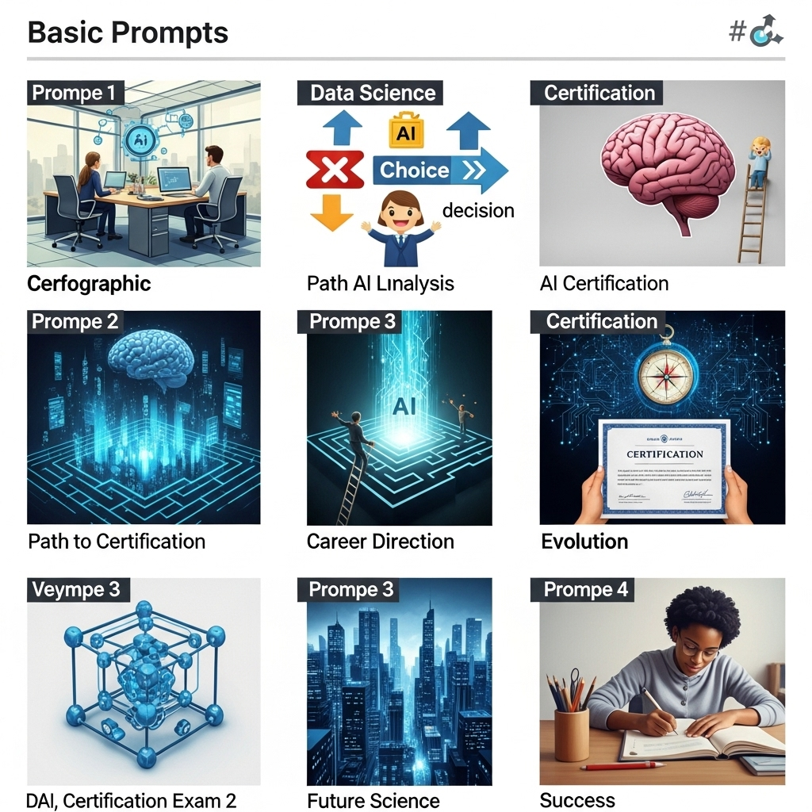
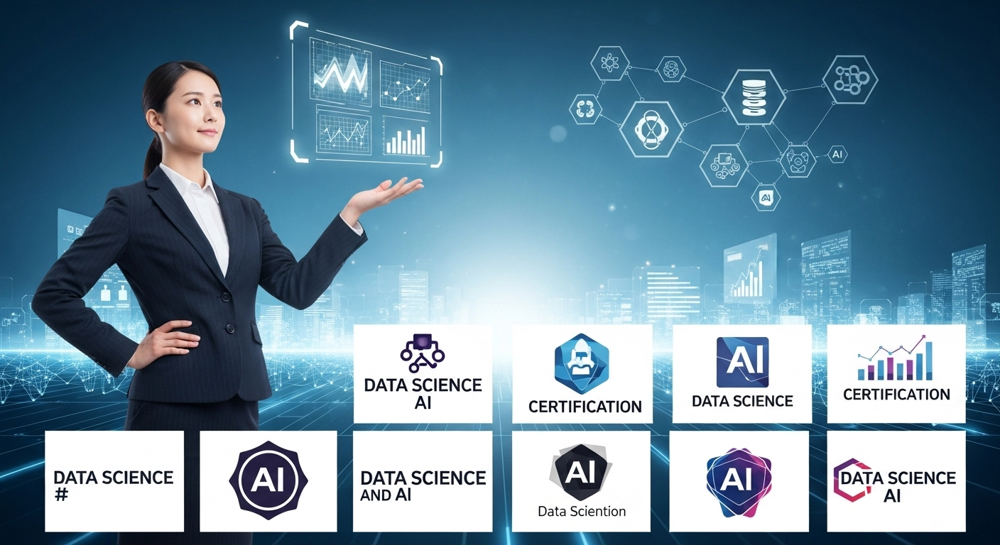
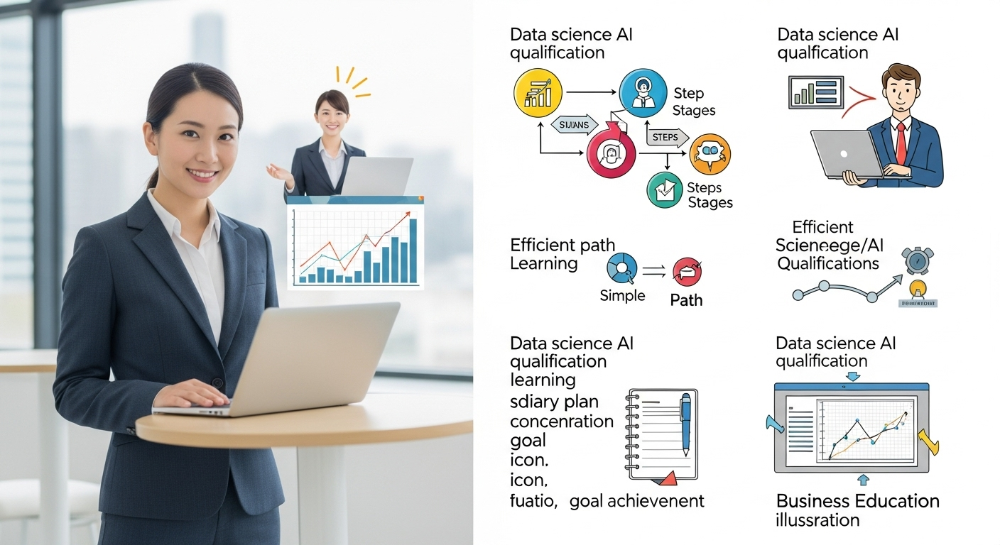

データサイエンス・AI資格でキャリアを拓く！選び方と学習法

導入
私たちの周りには、日々、膨大なデータが生まれています。スマートフォンの利用履歴、オンラインショッピングの購買データ、街角のカメラが捉える映像、工場のセンサーが記録する稼働状況。これらはほんの一例にすぎません。そして、この「データの海」から価値ある知見を見つけ出し、ビジネスや社会の課題解決に活かそうとする動きが、今、あらゆる業界で加速しています。その中心的な役割を担うのが、「データサイエンス」と「AI（人工知知能）」の技術です。
「AIに仕事が奪われる」といった少し不安を煽るような言葉を耳にすることもあるかもしれません。しかし、見方を変えれば、これはAIやデータを「使いこなす」側に回ることで、自身の市場価値を飛躍的に高める大きなチャンスが訪れている、とも言えるのではないでしょうか。
データサイエンティストやAIエンジニアといった専門職はもちろんのこと、企画、マーケティング、営業、経営管理など、さまざまな職種において、データに基づいた意思決定能力、いわゆる「データリテラシー」が不可欠なスキルとなりつつあります。
しかし、いざ「データサイエンスを学ぼう」「AIの知識を身につけよう」と思っても、「何から手をつければ良いのかわからない」「自分のスキルレベルをどう証明すればいいのだろう」と、途方に暮れてしまう方も少なくないはずです。広大で、専門用語も多いこの分野で、自分の現在地と目指すべき方向を見失ってしまうのは、無理もないことかもしれません。
そんな時、あなたの学習の羅針盤となり、キャリアの道標となってくれるのが「資格」の存在です。
資格取得を目指す過程は、体系的で網羅的な知識を身につけるための、いわば「学びの地図」を手に入れるようなものです。そして、取得した資格は、あなたのスキルや知識、そして学習意欲を客観的に証明してくれる、信頼の証となります。
この記事では、データサイエンスやAIの分野でキャリアを切り拓きたいと考えているすべての方に向けて、資格がもたらす価値から、あなたにぴったりの資格の選び方、具体的なおすすめ資格、そして挫折しないための効率的な学習法まで、網羅的に、そしてできる限り優しく、親しみやすい言葉で解説していきます。
新しいスキルを身につける旅は、決して平坦な道ばかりではないかもしれません。しかし、その先には、間違いなく新しい景色が広がっています。この記事が、あなたのその一歩を力強く後押しできることを心から願っています。さあ、一緒にデータサイエンスとAIの世界への扉を開けてみましょう。
データサイエンス・AI資格がキャリアにもたらす価値
資格取得と聞くと、「時間もお金もかかるし、本当に意味があるのだろうか？」と疑問に思う方もいらっしゃるかもしれません。特に、実務経験が重視されるIT・データサイエンスの分野では、その傾向が強いかもしれません。しかし、データサイエンス・AI関連の資格は、現代のキャリア形成において、私たちが想像する以上に大きな価値をもたらしてくれます。ここでは、その価値を3つの側面からじっくりと見ていきましょう。
AI時代に求められるデータサイエンススキルとは
まず、資格の価値を理解する前に、現代、特に「AI時代」と呼ばれる今、どのようなスキルが求められているのかを整理しておくことが大切です。テクノロジーが進化し、単純な作業が自動化されていく中で、人間にしかできない、より付加価値の高い仕事へとシフトしていくことが求められています。その核となるのが、データを活用して新たな価値を創造する能力、すなわちデータサイエンスのスキルです。
具体的には、以下のようなスキルセットが挙げられます。
- ビジネス課題解決力（Business Acumen）
これは、単にデータを分析する技術力だけでなく、「そもそもビジネス上のどんな課題を解決するためにデータを分析するのか」を理解し、設定する能力です。顧客の課題は何か、自社の強みは何か、市場はどう動いているのか。こうしたビジネスの文脈を深く理解した上で、データ分析の目的を明確に定義するスキルは、データサイエンティストにとって最も重要と言っても過言ではありません。
- データサイエンス力（Data Science Skills）
これはいわゆる技術的なスキルセットで、大きく3つに分けられます。
- 統計学・数学の知識: データのばらつきや傾向を正しく読み解き、分析結果の信頼性を評価するために不可欠な基礎体力です。平均値の罠、相関と因果の混同など、誤った結論を導かないための土台となります。
- 機械学習・AIの知識: データの背後にあるパターンを学習し、未来を予測したり、異常を検知したり、画像を分類したりするためのアルゴリズムに関する知識です。どのような課題にどの手法が適しているかを判断し、モデルを構築・評価する能力が求められます。
- プログラミングスキル: 膨大なデータを効率的に処理し、分析やモデル構築を実装するためのスキルです。特にPythonやRといったプログラミング言語、SQLによるデータベース操作の知識は必須とされています。
- データエンジニアリング力（Data Engineering Skills）
分析に必要なデータを収集し、利用可能な形に整理・加工・管理するためのスキルです。どんなに高度な分析手法を知っていても、元となるデータが信頼できないものであったり、アクセスできない状態であったりすれば意味がありません。データ基盤の設計・構築や、データパイプラインの作成など、分析の「土台」を支える重要な能力です。
これらのスキルは、相互に深く関連し合っています。AI時代に求められるのは、これらのスキルをバランス良く持ち合わせ、ビジネスの現場で実際に価値を生み出せる人材なのです。そして、資格学習は、これらの広範なスキルセットを体系的に学ぶための絶好の機会を提供してくれます。
資格がもたらす客観的なスキル証明
「私にはデータ分析のスキルがあります」と口で言うのは簡単です。しかし、特に未経験からの転職や、社内での新しいプロジェクトへの抜擢を目指す場合、その言葉を裏付ける「証拠」がなければ、相手に納得してもらうのは難しいでしょう。ポートフォリオ（自身の実績をまとめた作品集）の作成も非常に有効な手段ですが、それに加えて資格が持つ「客観性」は、大きな力を発揮します。
資格とは、特定の分野において、第三者機関が定めた基準を満たす知識やスキルを保有していることを公的に証明するものです。つまり、あなたのスキルレベルを、個人的な主観ではなく、社会的に認められた「共通の物差し」で測り、提示することができるのです。
採用担当者の視点に立ってみましょう。毎日何十、何百という履歴書に目を通す中で、応募者が持つスキルのレベルを短時間で正確に判断するのは至難の業です。「Pythonができます」と書かれていても、それがどの程度のレベルなのか（基本的な文法を知っているだけなのか、ライブラリを駆使して複雑なデータ分析ができるのか）は、文章だけでは判断できません。
しかし、そこに「Python3エンジニア認定データ分析試験 合格」といった記載があれば、「少なくとも、この試験が要求するレベルのデータ分析に関するPythonスキルは持っているのだな」と、客観的な評価の土台ができます。これは、書類選考を通過し、面接の機会を得るための強力な後押しとなります。
また、資格はあなたの学習意欲や、その分野に対するコミットメントの高さを示す指標にもなります。忙しい社会人が、時間と費用を投資して資格を取得したという事実は、「この人は主体的に学び、自己投資を惜しまない、成長意欲の高い人材だ」というポジティブな印象を与え、他の候補者との差別化につながるでしょう。
キャリアパスの選択肢が広がる理由
データサイエンス・AIのスキルを身につけ、それを資格という形で証明できるようになった時、あなたの目の前には、これまで見えなかった新しいキャリアの道が拓けてきます。
まず考えられるのは、専門職への道です。
- データサイエンティスト: ビジネス課題の発見から、データ収集、分析、モデル構築、そして結果の報告まで、一連のプロセスを担う専門家。
- データアナリスト: 主に既存のデータを分析し、ビジネス上の意思決定に役立つインサイト（洞察）を導き出すことに特化した専門家。
- 機械学習エンジニア: 機械学習モデルを開発し、それを実際のサービスやシステムに組み込む（実装する）ことを専門とするエンジニア。
- AIリサーチャー: 最新のAIアルゴリズムを研究・開発する、より学術的な側面の強い専門家。
これらの職種は専門性が高く、需要も大きいため、高い報酬ややりがいを得られる可能性があります。資格は、これらの専門職への扉を開くための「入場券」のような役割を果たしてくれます。
しかし、キャリアの選択肢は専門職だけにとどまりません。むしろ、既存の職務にデータサイエンスのスキルを「掛け合わせる」ことで、唯一無二の価値を発揮する道も大きく広がります。
例えば、
- マーケター × データ分析: 顧客データを分析し、より効果的なキャンペーン施策を立案・実行できる「データドリブンマーケター」に。
- 営業 × AI予測: 過去の受注データから成約確率の高い見込み顧客を予測し、効率的な営業活動を展開できる「セールステック人材」に。
- 人事 × ピープルアナリティクス: 社員のエンゲージメントや離職率に関するデータを分析し、より良い組織作りのための施策を提案できる「HRアナリスト」に。
- 経営企画 × 需要予測: 市場データや過去の販売実績から将来の需要を予測し、精度の高い事業計画を策定できる「戦略プランナー」に。
このように、自身の専門領域にデータサイエンスという強力な武器を加えることで、あなたは社内で替えの効かない貴重な人材となり、昇進や重要なプロジェクトへの抜擢のチャンスを掴むことができるでしょう。資格取得を通じて得た体系的な知識は、この「キャリアの掛け算」を実現するための強固な土台となるのです。
データサイエンス・AI資格取得のメリット
資格がキャリアにもたらす大きな価値について見てきましたが、ここではもう少し具体的に、資格取得を目指して学習するプロセスそのものがもたらすメリットについて、4つの観点から深掘りしていきたいと思います。これらは、資格というゴールだけでなく、そこに至るまでの道のりがいかに有益であるかを示してくれるはずです。
メリット１．専門知識の体系的な習得
データサイエンスやAIの分野は、非常に幅広く、奥深い世界です。統計学、プログラミング、データベース、機械学習、ディープラーニング、クラウド技術…と、学ぶべきことは多岐にわたります。独学で学習を始めようとすると、「一体何から手をつければいいのか」「今学んでいることは、全体の中でどの部分に位置するのだろうか」と、広大な知識の海で迷子になってしまうことがよくあります。
興味のある分野からつまみ食い的に学ぶのも楽しいですが、それだけでは知識に偏りが生まれたり、重要な基礎が抜け落ちてしまったりする危険性があります。例えば、最新のディープラーニングのライブラリの使い方を覚えても、その背景にある数学的な理論や、モデルを評価するための統計的な知識がなければ、得られた結果を正しく解釈したり、問題が発生した時に対処したりすることができません。
ここで、資格が大きな力を発揮します。多くの資格試験には、「シラバス」や「出題範囲」といった、学習すべき項目をまとめた設計図が用意されています。このシラバスこそが、あなたの学習の道筋を照らす、信頼できるロードマップとなるのです。
シラバスに沿って学習を進めることで、
- 網羅性: その分野で知っておくべき重要なトピックを、抜け漏れなく学ぶことができます。
- 体系性: 個々の知識がバラバラに存在するのではなく、「なぜこれが必要なのか」「この技術は他の技術とどう繋がっているのか」といった、知識と知識の間の関連性を理解しながら、体系的に学ぶことができます。
- 優先順位: 試験で問われやすい重要項目が明確になるため、限られた学習時間の中で、どこに力を入れて学ぶべきかの優先順位をつけることができます。
このように、資格取得という明確な目標を設定することで、私たちは広大な知識の海の中から、まず習得すべき本質的な部分を効率的かつ体系的に学ぶことができるのです。これは、「何から学べばいいかわからない」という初学者が抱える最大の悩みを解決してくれる、計り知れないメリットと言えるでしょう。
メリット２．転職・昇進での評価向上
前章でも触れましたが、資格はあなたのキャリアを次のステージに進める上で、非常に強力な武器となります。特に、転職や昇進といった、他者からの評価が重要になる場面でその真価を発揮します。
転職活動におけるメリット:
- 書類選考の通過率向上: 多くの企業、特に大手企業や専門性の高いポジションでは、歓迎要件として特定の資格が挙げられていることがあります。資格を保有していることで、採用担当者の目に留まりやすくなり、書類選考を通過する確率が高まります。たとえ必須要件でなくとも、学習意欲の高さを示すアピール材料となります。
- 面接での説得力向上: 面接官から「データサイエンスについてどのような勉強をされてきましたか？」と質問された際に、「○○という資格取得のために、△△という分野を体系的に学習しました」と具体的に答えることができます。これは、漠然と「本を読んで勉強しました」と答えるよりも、はるかに説得力があります。資格という客観的な事実が、あなたの言葉に重みを与えてくれるのです。
- 未経験からの挑戦の足がかり: 実務経験がない分野へ転職する場合、ポテンシャルをアピールすることが重要になります。資格は、実務経験の不足を補い、「この人は即戦力とはいかなくても、基礎知識と学習意欲は十分にある。入社後に大きく成長してくれるだろう」という期待感を抱かせるための重要な材料となります。
社内での昇進・キャリアアップにおけるメリット:
- 自己研鑽の証明: 業務時間外に自己投資を行い、資格を取得したという事実は、あなたの上司や人事部に対して、高いプロ意識と成長意欲を明確に示すことができます。これは、昇進や昇給の査定において、ポジティブな評価につながるでしょう。
- 新しい役割への抜擢: 社内でデータ活用を推進する新しい部署が立ち上がったり、データ分析を伴う重要なプロジェクトが始まったりした際に、「あの人は関連資格を持っているから、適任ではないか」と声がかかる可能性が高まります。資格が、あなたのキャリアの可能性を社内で広げるきっかけになるのです。
もちろん、資格さえあれば安泰というわけではありません。しかし、資格があなたの努力と能力を客観的に示し、新たなチャンスの扉を開く「鍵」の役割を果たしてくれることは間違いないでしょう。
メリット３．実務での応用力向上
資格の勉強は、単なる「試験対策」で終わるものではありません。そこで得た知識は、あなたの日々の業務をより豊かで、質の高いものに変えてくれるはずです。
例えば、あなたがWebマーケターだとします。これまでは、Google Analyticsの画面を見て、感覚的に「このページのアクセスが伸びているな」と判断していたかもしれません。しかし、統計検定の学習を通じて統計学の基礎を身につけることで、その「伸び」が統計的に有意なものなのか、それとも単なる偶然のばらつきなのかを判断できるようになります。A/Bテストの結果を正しく解釈し、自信を持って次の施策を提案できるようになるでしょう。
また、あなたが営業企画の担当者だとします。これまで勘と経験に頼っていた売上予測に、機械学習の知識を応用してみるのはどうでしょうか。DS検定などで学んだ知識を活かせば、過去の販売データや季節変動、キャンペーン情報などを変数として、より精度の高い予測モデルを構築できるかもしれません。これにより、過剰在庫のリスクを減らし、機会損失を防ぐといった、直接的な事業貢献が可能になります。
資格学習を通じて得られるのは、断片的なノウハウではなく、物事の「原理原則」です。
- なぜ、この分析手法を使うのか？
- なぜ、このアルゴリズムはこのような結果を出すのか？
- この結果を解釈する上で、注意すべき点は何か？
このような「なぜ」を理解することで、あなたは単なるツール・ユーザーから脱却し、課題の本質を見抜き、適切なアプローチを選択し、その結果を論理的に説明できる、真のプロフェッショナルへと成長することができます。実務で予期せぬ問題に直面した時、この原理原則の理解が、解決の糸口を見つけるための大きな助けとなるでしょう。
メリット４．最新技術へのキャッチアップ
データサイエンス・AIの分野は、日進月歩、いや秒進分歩と言ってもいいほど、技術の進化が速い世界です。昨日まで最新だった技術が、今日にはもう古いものになっている、ということも珍しくありません。このような変化の激しい分野で、常に第一線で活躍し続けるためには、継続的な学習、すなわち「学び続ける力」が不可欠です。
しかし、個人で最新の技術動向をすべて追いかけるのは、非常に困難です。どの情報が信頼できるのか、どの技術が今後主流になるのかを見極めるのは、専門家でも容易ではありません。
ここで、主要な資格試験が、効率的な知識のアップデートの機会を提供してくれます。 G検定やE資格を主催する日本ディープラーニング協会（JDLA）や、DS検定を主催するデータサイエンティスト協会など、多くの資格主催団体は、業界の専門家たちで構成されています。彼らは、常に最新の技術動向や業界のニーズを把握しており、それらを試験内容に反映させています。
そのため、資格試験のシラバスや公式テキストは、その時点で業界標準と見なされている知識や、今後重要になると考えられている技術が凝縮された、質の高い教材と言えます。資格の改定に合わせて学習をすることで、自然と最新のトレンドをキャッチアップすることができるのです。
例えば、クラウドプラットフォーム（AWS, Azure, GCP）が提供するAI/機械学習サービスは、次々と新しい機能が追加されています。これらのプラットフォームが提供する認定資格は、定期的に更新されるため、資格取得を目指すことで、これらの最新サービスを効率的に学ぶことができます。
資格取得を、一度きりのイベントではなく、数年ごとの定期的な知識の棚卸しとアップデートの機会と捉えることで、あなたは変化の激しいAI時代においても、常に価値を発揮し続けることができる人材でいられるでしょう。
データサイエンス・AI資格取得のデメリット
ここまで資格取得の多くのメリットについてお話ししてきましたが、物事には必ず光と影があります。資格取得を目指す際には、そのデメリットや注意点についても冷静に理解し、現実的な視点を持つことが成功への鍵となります。ここでは、資格取得に伴う3つの主なデメリットについて考えていきましょう。これらを事前に把握しておくことで、より賢明な判断ができるはずです。
デメリット１．取得までの時間と費用
資格取得は、決して楽な道のりではありません。まず、最も大きなハードルとなるのが、学習時間の確保です。
多くの社会人の方は、日中の業務を終えた後や、週末の貴重なプライベートな時間を使って学習を進めることになります。資格の難易度にもよりますが、一般的にデータサイエンス・AI関連の資格を取得するためには、数十時間から、難易度の高いものでは数百時間以上の学習が必要とされています。
例えば、初学者向けのG検定でも30時間程度、より専門的なE資格や応用情報技術者試験などになると、200時間以上の学習時間が見込まれることもあります。1日に1時間学習するとしても、半年以上の期間が必要になる計算です。この間、友人との付き合いや趣味の時間を犠牲にしなければならない場面も出てくるでしょう。継続的な努力と、時には強い意志が求められます。
次に、金銭的なコストも無視できません。
- 受験料: 資格によって様々ですが、数千円から数万円、中にはそれ以上かかるものもあります。一度で合格できれば良いですが、再受験となればその費用は倍になります。
- 教材費: 公式テキストや問題集、参考書などを揃えるのにも費用がかかります。複数の書籍を購入すれば、1万円を超えることも珍しくありません。
- 講座・スクール費用: 独学に不安を感じ、オンライン講座や専門のスクールを利用する場合、数万円から数十万円の費用が必要になることもあります。特に、E資格のように認定プログラムの受講が必須となっている資格では、この費用が大きな負担となる可能性があります。
これらの時間的・金銭的コストは、一種の「自己投資」です。しかし、その投資が将来的にどれだけのリターン（昇進、転職による年収アップなど）を生むのかを冷静に見極め、自身のライフプランや経済状況と照らし合わせて、無理のない範囲で挑戦することが重要です。勢いだけで始めてしまい、途中で挫折してしまうと、費やした時間もお金も無駄になってしまう可能性があることを心に留めておく必要があります。
デメリット２．資格だけでは不十分な実務経験
これは、データサイエンス・AI分野において最も強調されるべき点かもしれません。それは、「資格は、実務能力を直接証明するものではない」という事実です。
資格試験は、多くの場合、知識の有無を問うものです。選択式の問題が中心であれば、たとえ理論を深く理解していなくても、暗記によって合格できてしまう可能性もゼロではありません。しかし、実際のビジネスの現場で求められるのは、単なる知識ではなく、その知識を使って現実の課題を解決する能力、すなわち「実践力」です。
採用担当者や現場のリーダーが最も懸念するのは、「資格は持っているけれど、実際に手を動かしてデータを分析したり、コードを書いたりすることができない」、いわゆる「ペーパードライバー」状態の人材です。
考えてみてください。あなたがプロジェクトのリーダーだとして、2人の候補者がいたとします。
- Aさん: 関連資格を複数保有しているが、実務経験や自分で何かを作った経験はない。
- Bさん: 資格は持っていないが、Kaggle（データ分析コンペティションサイト）で上位入賞の経験があり、GitHub（ソフトウェア開発のプラットフォーム）には自身で分析したコードや考察をまとめたポートフォリオが公開されている。
どちらの候補者と一緒に働きたいと思うでしょうか？多くの場合、Bさんが選ばれるでしょう。
これは、資格が無意味だということでは決してありません。資格は、あなたの基礎知識と学習意欲を証明する素晴らしいツールです。しかし、それだけでは片手落ちなのです。
このデメリットを克服するためには、資格学習と並行して、実践的な経験を積むことが不可欠です。
- ポートフォリオの作成: KaggleやNishikaなどのコンペに参加したり、政府が公開している統計データ（e-Stat）や興味のある分野のオープンデータを使って、自分で課題を設定し、分析・可視化してみましょう。その過程と結果をブログやGitHubで公開すれば、それがあなたの「実務能力」を証明する強力な実績となります。
- 実務での小さな実践: 現在の職場で、少しでもデータに触れる機会があれば、資格学習で得た知識を活かしてみましょう。Excelの集計をPythonで自動化してみる、簡単なアンケート結果を統計的に分析してみるなど、小さな成功体験を積み重ねることが、自信とスキルの向上につながります。
資格は「知識の証明」、ポートフォリオは「実践力の証明」。この両輪を揃えることで、あなたの市場価値は飛躍的に高まるのです。
デメリット３．資格の陳腐化リスク
前述の通り、データサイエンス・AIの世界は技術の進歩が非常に速いという特徴があります。これは、一度取得した資格の価値が、時間の経過とともに相対的に低下していく「陳腐化」のリスクをはらんでいることを意味します。
特に、特定のソフトウェアの特定のバージョンに依存するようなベンダー資格は、そのソフトウェアがアップデートされたり、市場でのシェアを失ったりすると、資格の価値も大きく下がってしまう可能性があります。
また、数年前に主流だった技術やアルゴリズムが、より高性能な新しいものに置き換えられることも日常茶飯事です。例えば、5年前に取得した機械学習の資格で問われていた知識が、現在では少し古いものと見なされてしまうかもしれません。
この陳腐化リスクに対応するためには、以下のようなマインドセットが重要になります。
- 資格取得をゴールにしない: 資格取得は、キャリアのゴールではなく、継続的な学習の旅における一つのマイルストーン（通過点）であると捉えましょう。「合格したから終わり」ではなく、「ここからがスタートだ」という意識を持つことが大切です。
- 普遍的な知識を重視する: 特定のツールやライブラリの操作方法だけでなく、その背景にある統計学、数学、アルゴリズムの原理といった、時代が変わっても色褪せない「普遍的な知識」を深く理解することに重点を置きましょう。こうした基礎体力があれば、新しい技術が登場した際にも、その本質を素早く理解し、キャッチアップすることが容易になります。
- 継続的な学習を習慣にする: 資格の有効期限が設定されている場合は、更新のための学習を怠らないようにしましょう。また、有効期限がない資格であっても、定期的に業界のニュースをチェックしたり、技術ブログを読んだり、勉強会に参加したりと、常にアンテナを高く張り、知識をアップデートし続ける姿勢が求められます。
資格は、取得した瞬間のあなたの知識レベルを証明するものですが、その輝きを保ち続けるためには、あなた自身の継続的な努力が必要不可欠なのです。
データサイエンス・AI資格の選び方

さて、資格の価値やメリット・デメリットを理解したところで、いよいよ「では、自分はどの資格を目指すべきなのか？」という具体的な選択のフェーズに入っていきましょう。データサイエンス・AI関連の資格は数多く存在し、それぞれに特徴やターゲット層が異なります。自分に合わない資格を選んでしまうと、学習のモチベーションが続かなかったり、取得してもキャリアに活かせなかったりする可能性があります。ここでは、あなたの目的やレベルに合わせた、賢い資格の選び方を6つの切り口からご紹介します。
選び方１．データ分析基礎を固めたい方向けの選び方
対象者:
- これからデータ分析の世界に足を踏み入れようとしている、完全な初学者の方
- 営業や企画など、非エンジニア職で、業務にデータ活用を取り入れたいと考えている方
- 「データリテラシー」という言葉に興味があり、まずはその基礎を身につけたい方
重視すべきポイント: このステージで最も大切なのは、いきなり高度な技術に手を出すのではなく、データサイエンティストたちの「共通言語」となる基礎知識をしっかりと固めることです。具体的には、以下のような内容を網羅している資格が適しています。
- 統計学の基礎: 平均、分散、標準偏差といった基本的な統計量の意味から、仮説検定、相関分析、回帰分析といった、データから意味のある結論を導き出すための基本的な考え方。
- データリテラシー: データを正しく読み解き、活用するための心構え。グラフの誤用や、相関と因果の混同といった、データ分析で陥りがちな罠を理解すること。
- ITの基礎知識: データベースの基本的な仕組みや、AI・機械学習がどのようなものなのかといった、全体像を掴むための知識。
おすすめの資格の方向性:
- 統計検定（3級・2級）: データの正しい見方、使い方を統計学の観点から体系的に学べる資格です。特に2級は、大学基礎課程レベルの統計学の知識を証明でき、多くのデータ分析職で要求される知識の土台となります。
- データサイエンティスト検定（DS検定）リテラシーレベル: データサイエンティストに必要な「ビジネス力」「データサイエンス力」「データエンジニアリング力」の3つのスキル領域について、基礎的な知識が網羅的に問われます。全体像を把握するのに最適です。
まずはこれらの資格で足場を固めることで、その後のより専門的な学習へとスムーズに進むことができるでしょう。
選び方２．AI・機械学習の知識を深めたい方向けの選び方
対象者:
- データ分析の基礎知識はあり、さらにAIや機械学習の分野に専門性を広げたい方
- ITエンジニアとしてキャリアを積んできたが、AI開発の分野に挑戦したい方
- AIを活用した新規事業の企画などを担当しており、技術的な側面への理解を深めたい方
重視すべきポイント: この段階では、AI・機械学習の「何ができて、何ができないのか」「どのような仕組みで動いているのか」を、より深く、技術的に理解することが目標となります。
- 機械学習アルゴリズムの理論: 回帰、分類、クラスタリングといった基本的なタスクや、決定木、サポートベクターマシン、ニューラルネットワークなど、代表的なアルゴリズムの仕組みと特徴を理解すること。
- ディープラーニングの知識: AIのブレークスルーを牽引したディープラーニング（深層学習）の基本的な構造や、画像認識、自然言語処理といった応用分野に関する知識。
- 実装スキル: Pythonなどのプログラミング言語と、Scikit-learn, TensorFlow, PyTorchといったライブラリを使って、実際にモデルを構築・評価する能力。
おすすめの資格の方向性:
- G検定（ジェネラリスト検定）: AI・ディープラーニングに関する幅広い知識を問う資格です。ビジネスサイドの方がAIの全体像を掴むのに適していますが、エンジニアにとっても知識の整理に役立ちます。
- E資格（エンジニア資格）: ディープラーニングの理論を深く理解し、実装する能力を証明する、エンジニア向けの高度な資格です。JDLA認定プログラムの修了が受験要件となっており、本気でAIエンジニアを目指す方の登竜門と言えます。
- Python3エンジニア認定データ分析試験: Pythonを用いたデータ分析の実践的なスキルに特化した資格です。ライブラリ（NumPy, pandas, Matplotlib, scikit-learn）の具体的な使い方を問われるため、コーディング能力の証明に直結します。
- クラウド系のAI/ML資格（例: AWS認定 機械学習-専門知識）: AWSなどのクラウドプラットフォーム上で、機械学習モデルを構築・訓練・デプロイするスキルを証明します。実務ではクラウド利用が主流なため、市場価値が非常に高い資格です。
選び方３．データサイエンティストを目指したい方向けの選び方
対象者:
- データサイエンティストという専門職への就職・転職を本気で目指している方
- すでにデータ分析関連の業務に携わっており、より上流の課題設定やモデル構築を担える存在になりたい方
重視すべきポイント: データサイエンティストには、前述した「ビジネス課題解決力」「データサイエンス力」「データエンジニアリング力」という3つのスキルが総合的に求められます。そのため、単一の資格だけでなく、複数の資格を組み合わせることで、自身の総合力をアピールする戦略が有効です。
- ITの基礎体力: 大規模なデータを扱うためのデータベースやネットワーク、セキュリティといった、ITシステム全般に関する幅広い知識。
- データ基盤に関する知識: データを収集・蓄積・加工するためのデータウェアハウス（DWH）やデータレイク、ETLツールなどに関する知識。
- 統計学と機械学習の深い理解: 表面的な知識だけでなく、数理的な背景も含めて深く理解していること。
おすすめの資格の方向性:
- 応用情報技術者試験（AP）: IT全般の幅広い知識と応用力を証明できる国家資格です。この資格を持っていることで、IT人材としての確かな基礎体力があることをアピールできます。
- データベーススペシャリスト試験（DB）: データベースの設計・管理・運用に関する高度な専門知識を証明する国家資格です。データエンジニアリング領域の強みを示すのに最適です。
- 統計検定（準1級・1級）: 2級よりもさらに高度な、応用的な統計学の知識を証明します。特に準1級は、データサイエンスで実際に使われる多変量解析などの手法が範囲に含まれており、実践的なスキル証明につながります。
これらの基礎体力を示す資格と、DS検定やE資格のような専門資格を組み合わせることで、「ITの土台もしっかりしていて、かつデータサイエンスの専門性も高い」という、非常に魅力的な人材像をアピールできるでしょう。
選び方４．特定のツールスキルを証明したい方向けの選び方
対象者:
- 業務で特定のクラウドプラットフォーム（AWS, Azure, GCP）やBIツール（Tableau, Power BI）、データベース（Oracle, SQL Server）を頻繁に利用している方
- これから上記のツールを導入するプロジェクトに参加する予定があり、スキルを証明したい方
重視すべきポイント: この場合は、そのツールの提供元（ベンダー）が公式に認定している「ベンダー資格」を取得するのが最も直接的で効果的です。
- ツールの実践的な操作能力: そのツールが持つ様々な機能を、いかに効率的に、かつ効果的に使いこなせるか。
- ベストプラクティスへの理解: ベンダーが推奨する、最も効率的で安全なツールの利用方法を理解していること。
- 最新機能への追随: 頻繁にアップデートされるツールの新機能について、常に知識を更新していること。
おすすめの資格の方向性:
- クラウド系認定資格（AWS, Azure, GCP）: 各クラウドプラットフォームが提供する、データ分析や機械学習に特化した認定資格。実務直結のスキル証明として非常に価値が高いです。
- データベース系資格（例: ORACLE MASTER）: 特定のデータベース製品に関する深い知識と管理能力を証明します。
- BIツール系資格（例: Tableau Desktop Specialist）: データを可視化し、インサイトを伝えるBIツールのスキルを証明します。データ分析の「最後の出口」を担う重要なスキルです。
これらの資格は、特定のツールに関する専門性をピンポイントでアピールできるため、求人票でそのツールの経験が求められている場合に、絶大な効果を発揮します。
選び方５．自身の経験レベルに合わせた選び方
資格選びで失敗しないためには、現在の自分のスキルレベルを客観的に把握し、身の丈に合った資格から挑戦することが大切です。いきなり難易度の高すぎる資格に挑戦して挫折してしまうと、学習意欲そのものを失いかねません。
- 初学者レベル: まずは「合格する」という成功体験を積むことがモチベーション維持につながります。統計検定3級やG検定、ITパスポートなど、比較的学習時間が短く、合格率も高い資格からスタートするのがおすすめです。
- 中級者レベル: 基礎知識が身につき、実務でデータに触れる機会も増えてきた段階です。統計検定2級やDS検定、Python3エンジニア認定データ分析試験、応用情報技術者試験など、より専門的で、実務に直結する資格にステップアップしましょう。
- 上級者レベル: 専門家として、さらに高度なスキルを証明したい段階です。E資格や統計検定準1級、データベーススペシャリスト試験、AWS認定 機械学習-専門知識など、難易度は高いですが、その分、取得した際の市場価値も非常に高い資格に挑戦する価値があります。
自分のレベルを見極め、少しだけストレッチする（背伸びする）くらいの難易度の資格を選ぶのが、継続的な成長につながる秘訣です。
選び方６．企業の評価基準を考慮した選び方
最後に、少し戦略的な視点として、自分が目指している業界や企業がどのような資格を評価しているのかをリサーチすることも重要です。
- 求人情報の確認: 転職サイトなどで、興味のある企業の求人情報をチェックしてみましょう。「応募資格」や「歓迎要件」の欄に、具体的な資格名が記載されていることがよくあります。これは、その企業がどのようなスキルを求めているかを知るための、最も直接的なヒントです。
- 業界のデファクトスタンダードを調べる: 例えば、IT業界全般では情報処理技術者試験（国家資格）の知名度が高く、Web業界やスタートアップではクラウド系の認定資格が重視される傾向があります。自分が身を置きたい業界で、どのような資格が「共通言語」として認識されているかを調べてみましょう。
- 転職エージェントへの相談: 業界の動向に詳しい転職エージェントに相談してみるのも有効な手段です。「○○業界でデータサイエンティストとして働くには、どの資格が有利ですか？」といった具体的な質問を投げかけることで、現場のリアルな情報を得られるかもしれません。
自分の「学びたいこと」と、市場（企業）から「求められていること」の接点を見つけ出し、戦略的に資格を選ぶことで、あなたのキャリアアップの可能性はさらに大きく広がるでしょう。
データサイエンス・AI資格おすすめ10選

ここでは、これまでにご紹介した選び方を踏まえ、数ある資格の中から特におすすめしたい10個の資格をピックアップし、それぞれの特徴や対象者、難易度などを詳しく解説していきます。あなたの目的やレベルに合った資格がきっと見つかるはずです。
おすすめ資格１．統計検定（初学者向け）
- 概要と主催団体: 一般財団法人 統計質保証推進協会が実施する、統計学に関する知識や活用力を評価する全国統一試験です。データ分析の根幹をなす統計学のスキルを体系的に証明できます。
- 対象者像: データ分析の初学者、文系出身で数学に苦手意識がある方、マーケターや企画職など、ビジネスの現場でデータに基づいた意思決定を行いたいと考えているすべての方におすすめです。
- 問われるスキル・知識: 4級から1級まで幅広いレベルがありますが、キャリアアップを目指すなら2級の取得が一つの目標となります。2級では、大学基礎課程レベルの統計学（記述統計、確率分布、仮説検定、相関・回帰分析など）が問われます。データ分析の「読み・書き・そろばん」の「そろばん」に当たる、最も基礎的で重要な知識です。
- 難易度と学習時間の目安: 2級の合格率は30%～40%程度。統計学の初学者の場合、50～100時間程度の学習時間が必要とされています。公式テキストと過去問題集を中心に学習を進めるのが王道です。
- 取得するメリット: 統計的な思考力が身につき、データやグラフを正しく読み解く力が養われます。A/Bテストの結果評価やアンケートデータの分析など、実務で直接役立つ場面が多く、あらゆるビジネスパーソンにとって価値のある資格と言えます。
おすすめ資格２．データサイエンティスト検定（DS検定）リテラシーレベル（初学者向け）
- 概要と主催団体: 一般社団法人 データサイエンティスト協会が主催する、データサイエンティストに必要とされるスキル（ビジネス力、データサイエンス力、データエンジニアリング力）の基礎知識を網羅的に問う検定です。
- 対象者像: これからデータサイエンティストを目指す学生や社会人、データサイエンスの全体像を掴みたいビジネスパーソンやマネージャー層に最適です。
- 問われるスキル・知識: 特定の深い専門知識というよりは、データサイエンスプロジェクト全体を推進するために必要な幅広い知識が問われます。AI・機械学習の基本的な考え方、データ加工やデータベースの基礎、ビジネス課題へのアプローチ方法など、まさに「見習いレベル」として知っておくべき内容が凝縮されています。
- 難易度と学習時間の目安: 合格率は50%前後で、初学者向けの資格としては標準的な難易度です。学習時間は30～50時間程度が目安。公式リファレンスブックが学習の中心となります。
- 取得するメリット: データサイエンスの世界の「地図」を手に入れることができます。この資格の学習を通じて、自分がどの分野に興味があるのか、次にどの専門分野を深掘りすべきかを見極める良いきっかけになります。
おすすめ資格３．G検定（ジェネラリスト検定）（初学者向け）
- 概要と主催団体: 一般社団法人 日本ディープラーニング協会（JDLA）が主催する、AI・ディープラーニングの活用リテラシーを証明するための検定です。
- 対象者像: AIを活用して事業を企画・推進するビジネスパーソン（ジェネラリスト）がメインターゲットです。エンジニアだけでなく、企画、営業、マーケティング、経営層など、幅広い職種の方におすすめできます。
- 問われるスキル・知識: ディープラーニングの技術的な仕組みの概要から、AIが社会や産業にどのような影響を与えるか、法律や倫理に関する問題まで、非常に幅広い知識が問われます。AIプロジェクトを推進する上で、エンジニアと円滑なコミュニケーションを取るための「共通言語」を習得できます。
- 難易度と学習時間の目安: 合格率は60%～70%程度と高めですが、出題範囲が広いため油断は禁物です。学習時間は20～40時間程度が目安。公式テキストや問題集が充実しています。
- 取得するメリット: AIに関する体系的な知識が身につき、ニュースなどで飛び交うAI関連のキーワードを正しく理解できるようになります。自社のビジネスにAIをどう活用できるか、具体的なアイデアを考える力が養われます。
おすすめ資格４．E資格（エンジニア資格）（AI・機械学習の専門性向上向け）
- 概要と主催団体: G検定と同じく、日本ディープラーニング協会（JDLA）が主催する、ディープラーニングの理論を深く理解し、適切な手法を選択して実装する能力を持つエンジニア向けの資格です。
- 対象者像: AIエンジニア、機械学習エンジニアとしてキャリアを築きたいと考えている方。数学やプログラミングの基礎知識があることが前提となります。
- 問われるスキル・知識: 応用数学（線形代数、確率・統計、情報理論）、機械学習の各手法、深層学習の理論（CNN, RNNなど）、開発・運用環境まで、非常に高度で専門的な内容が問われます。
- 難易度と学習時間の目安: 合格率は70%前後ですが、受験するためにはJDLAが認定したプログラムを修了する必要があり、このプログラムの学習に200時間以上かかることもあります。受験資格を得るまでが最大のハードルと言える、非常に難易度の高い資格です。
- 取得するメリット: ディープラーニング実装のプロフェッショナルであることの強力な証明となります。AIエンジニアとしての転職・就職活動において、他の候補者と大きく差別化できるでしょう。認定プログラムを通じて、第一線で活躍する講師から実践的なスキルを学べる点も大きな魅力です。
おすすめ資格５．Python3エンジニア認定データ分析試験（AI・機械学習の専門性向上向け）
- 概要と主催団体: 一般社団法人Pythonエンジニア育成推進協会が実施する、プログラミング言語Pythonを使ったデータ分析の基礎や方法を問う試験です。
- 対象者像: Pythonを使ってデータ分析を行いたいエンジニアやデータアナリスト、研究者など。実践的なコーディングスキルを証明したい方におすすめです。
- 問われるスキル・知識: Pythonの基本的な文法に加え、データ分析で頻繁に利用されるライブラリであるNumPy, pandas, Matplotlib, scikit-learnの使い方が中心となります。数学や統計の理論よりも、ライブラリをいかに使いこなせるかという実践的なスキルが問われます。
- 難易度と学習時間の目安: 合格率は80%前後と非常に高いですが、これは受験者の多くが事前にしっかりと学習しているためです。学習時間は30～50時間程度が目安。主教材である公式テキスト（『Pythonによるあたらしいデータ分析の教科書』）をしっかりと読み込み、実際にコードを動かしながら学習することが合格への近道です。
- 取得するメリット: Pythonによるデータ分析能力を客観的に証明できます。特に、pandasやscikit-learnといったライブラリの知識は実務で必須となるため、即戦力としてのアピールにつながります。
おすすめ資格６．AWS認定 機械学習-専門知識（AI・機械学習の専門性向上向け）
- 概要と主催団体: Amazon Web Services（AWS）が提供する認定資格の一つで、AWSクラウド上で機械学習（ML）モデルを設計、実装、デプロイ、維持する専門知識を検証します。
- 対象者像: AWS環境で機械学習ソリューションを開発・運用するデータサイエンティストや開発者。クラウド上での実践的なAI開発スキルを身につけたい方。
- 問われるスキル・知識: データエンジニアリング（データ収集・加工）、探索的データ分析（EDA）、モデリング（Amazon SageMakerなどのAWSサービスを使ったモデル構築・訓練）、ML実装と運用まで、一連のMLワークロードに関する深い知識が問われます。
- 難易度と学習時間の目安: AWS認定資格の中でも「専門知識（Specialty）」に分類される、最上位レベルの難易度を誇ります。AWSの実務経験が1～2年あることが推奨されており、学習時間も100時間以上は見ておく必要があるでしょう。
- 取得するメリット: クラウドAI/ML人材の需要は非常に高く、この資格を保有していることは市場価値を飛躍的に高めます。AWSという具体的なプラットフォーム上での実践力を証明できるため、多くの企業から高く評価されます。
おすすめ資格７．データベーススペシャリスト試験（DB）（データサイエンティスト向け）
- 概要と主催団体: 独立行政法人情報処理推進機構（IPA）が実施する、情報処理技術者試験の中でも特に高度な知識・技能を問う「高度区分」の国家資格です。
- 対象者像: データエンジニア、データベース管理者、大規模なデータを扱うデータサイエンティスト。データの管理・設計のプロフェッショナルを目指す方。
- 問われるスキル・知識: 高品質なデータベースを企画、要件定義、設計、開発、運用、保守する能力が問われます。正規化やER図といった概念的な設計から、SQLによる実践的なデータ操作、パフォーマンスチューニング、セキュリティまで、データベースに関する深い知識が求められます。
- 難易度と学習時間の目安: 合格率は15%前後と非常に低く、最難関の国家資格の一つです。実務経験者でも合格は容易ではなく、300時間以上の綿密な学習計画が必要となります。
- 取得するメリット: データベースに関する最高レベルの専門家であることを国が証明してくれます。データ分析の土台となるデータ基盤を扱える人材は非常に貴重であり、キャリアの安定性と専門性を大きく向上させることができます。
おすすめ資格８．応用情報技術者試験（AP）（データサイエンティスト向け）
- 概要と主催団体: データベーススペシャリスト試験と同じく、IPAが実施する国家資格です。IT全般に関する応用的な知識・技能を証明します。
- 対象者像: すべてのITエンジニア、そしてITを高度に活用するビジネスパーソン。データサイエンティストとして、技術的なバックグラウンドをしっかりと固めたい方。
- 問われるスキル・知識: テクノロジ系（基礎理論、コンピュータシステム、ネットワーク、セキュリティ）、マネジメント系（プロジェクトマネジメント、サービスマネジメント）、ストラテジ系（経営戦略、システム戦略）と、非常に幅広い分野から出題されます。
- 難易度と学習時間の目安: 合格率は20%台前半。出題範囲が広いため、効率的な学習が求められます。学習時間は200～300時間が目安です。
- 取得するメリット: IT人材としての「基礎体力」を総合的に証明できます。データサイエンスだけでなく、ITシステム全体の文脈の中で物事を考えられる、視野の広い人材であることをアピールできます。多くの企業で報奨金や資格手当の対象となっている、知名度と信頼性の高い資格です。
おすすめ資格９．ORACLE MASTER（特定のツールスキル証明向け）
- 概要と主催団体: 日本オラクル社が主催する、同社のリレーショナルデータベース管理システム（RDBMS）である「Oracle Database」の管理スキルを認定するベンダー資格です。
- 対象者像: Oracle Databaseを使用するシステムの開発者、管理者、データエンジニア。特に金融機関や大企業の基幹システムなど、ミッションクリティカルな領域で活躍したい方。
- 問われるスキル・知識: Bronze, Silver, Gold, Platinumの4つのレベルがあり、レベルが上がるにつれて、SQLによるデータ操作から、データベースの導入・運用管理、パフォーマンスチューニング、バックアップ・リカバリといった高度な内容が問われます。
- 難易度と学習時間の目安: Silverであれば100時間程度、Goldとなると200時間以上の学習が必要とされます。実機での操作経験が合格の鍵を握ります。
- 取得するメリット: Oracle Databaseは長年にわたり商用データベースのトップシェアを誇っており、この資格は業界内で非常に高い知名度と信頼性を持っています。特にGold以上を取得すれば、データベースの専門家として高い評価を得ることができます。
おすすめ資格１０．Tableau Desktop Specialist（特定のツールスキル証明向け）
- 概要と主催団体: BI（ビジネスインテリジェンス）ツールのリーディングカンパニーであるTableau社が認定する、Tableau Desktopの基本的なスキルと知識を証明する資格です。
- 対象者像: データアナリスト、マーケター、経営企画など、データを可視化し、分析結果を他者に分かりやすく伝える必要があるすべての方。
- 問われるスキル・知識: データへの接続、データ準備、チャートやダッシュボードの作成、分析機能の利用など、Tableau Desktopの基本的な操作が一通り問われます。
- 難易度と学習時間の目安: Tableau認定資格の中ではエントリーレベルに位置づけられており、難易度は比較的易しいです。Tableauを日常的に使用している人であれば、20～30時間程度の対策で合格が可能です。
- 取得するメリット: データ分析の「伝える力」を証明できます。どんなに優れた分析も、その結果が相手に伝わらなければ価値を生みません。Tableauを使いこなし、データを美しいビジュアルに落とし込むスキルは、あらゆるビジネスシーンで重宝されます。
データサイエンス・AI資格の効率的な学習の流れ

自分に合った資格が見つかったら、次はいよいよ学習のスタートです。しかし、やみくもに勉強を始めても、途中で挫折してしまったり、非効率な学習になってしまったりする可能性があります。ここでは、忙しい社会人でも着実にゴールにたどり着くための、効率的な学習の流れを4つのステップでご紹介します。
流れ１．学習計画の立て方
何事も、最初が肝心です。しっかりとした学習計画を立てることが、資格取得の成功確率を大きく左右します。
- ゴール（試験日）を設定し、逆算する:
まず、受験する試験の日程を確認し、「いつまでに合格するか」という明確なゴールを設定します。そこから逆算して、全体の学習スケジュールを組み立てていきます。例えば、「3ヶ月後の試験日に合格する」と決めたら、週単位、日単位で何をすべきかが見えてきます。
- 必要な総学習時間を見積もる:
合格者の体験記や公式サイトの情報などを参考に、その資格を取得するために必要な学習時間のおおよその目安を把握します。例えば、「100時間の学習が必要」と分かれば、3ヶ月（約90日）で達成するためには、1日あたり約1時間の学習が必要、という計算になります。
- 学習タスクを具体的に分解する:
「勉強する」という漠然とした目標ではなく、「今週はテキストの第1章と第2章を読み、章末問題を解く」「今日は過去問を1年分やる」といったように、タスクを具体的かつ実行可能なレベルまで分解します。これにより、日々の進捗が可視化され、モチベーションの維持につながります。
- インプットとアウトプットのバランスを考える:
学習は、知識を頭に入れる「インプット」（参考書を読む、動画講義を観るなど）と、その知識を使ってみる「アウトプット」（問題を解く、コードを書くなど）の両輪で進めることが重要です。計画段階で、「テキスト学習期間」と「問題演習期間」を大まかに分けておくと良いでしょう。一般的には、インプット3割、アウトプット7割程度のバランスが効果的とされています。
- 無理のない計画を立てる（バッファを設ける）:
計画を詰め込みすぎると、急な仕事や体調不良などで計画が崩れた際に、一気にやる気を失ってしまいます。週に1日は予備日（バッファ）を設けるなど、ある程度の柔軟性を持たせた、継続可能な計画を立てることが何よりも大切です。
流れ２．おすすめの学習リソースの活用
現代は、幸いなことに質の高い学習リソースが豊富に存在します。これらをうまく組み合わせることで、学習効率を飛躍的に高めることができます。
- 公式テキスト・問題集:
何よりもまず手に入れるべきは、資格の主催団体が発行している、あるいは推奨している公式の教材です。試験の出題範囲や傾向を最も正確に反映しており、学習の「核」となります。特に過去問題は、自分の実力と試験で求められるレベルとのギャップを測るための、最高の教材です。
- オンライン学習プラットフォーム:
- Udemy, Coursera: 特定の技術や資格に特化した、質の高い動画講座が豊富に揃っています。動画で視覚的に学べるため、書籍だけでは理解しにくい概念も直感的に把握できます。
- Aidemy, TechAcademy: プログラミングやAIに特化したオンラインスクール。メンターによるサポートが受けられるため、独学に不安がある方や、短期間で集中的に学びたい方におすすめです。
- 書籍:
公式テキスト以外にも、評価の高い参考書や専門書を併用することで、理解を深めることができます。特に、理論的な背景をじっくりと学びたい場合は、その分野の「定番」とされる書籍を1冊手元に置いておくと安心です。
- Webサイト・技術ブログ:
- Qiita, Zenn: 現役のエンジニアやデータサイエンティストが、実践的なノウハウや学習の記録を共有しているプラットフォーム。特定の技術で詰まった時の解決策を探したり、他の人がどのように学んでいるかを知るのに役立ちます。
- 公式サイトのドキュメント: AWSやTableauなどのベンダー資格を目指す場合、公式サイトのドキュメントやチュートリアルが最も正確で最新の情報源となります。
これらのリソースを、自分の学習スタイルや理解度に合わせて組み合わせ、「読む」「観る」「聞く」「書く」といった五感をフル活用して学習を進めていきましょう。
流れ３．実践を交えた学習の重要性
デメリットの章でも触れましたが、知識をインプットするだけでは、真の応用力は身につきません。学んだ知識を実際に使ってみる「実践」の機会を、意識的に学習プロセスに組み込むことが極めて重要です。
- サンプルコードを自分で動かしてみる:
参考書やWebサイトに載っているサンプルコードを、ただ眺めるだけでなく、自分のPC環境で実際に打ち込み、実行してみましょう。エラーが出たら、それを解決するプロセスそのものが、深い学びにつながります。
- データ分析コンペティションに参加する:
KaggleやNishikaといったプラットフォームでは、企業や研究機関が提供するリアルなデータと課題が公開されており、世界中の参加者と分析モデルの精度を競い合います。上位入賞は難しいかもしれませんが、他の参加者が公開しているコード（Notebook）を読んだり、ディスカッションに参加したりするだけでも、非常に多くの学びがあります。
- 個人プロジェクトを立ち上げる:
自分が興味を持てるテーマを見つけ、それに関するデータを収集・分析してみましょう。「好きな野球チームの勝敗を予測するモデルを作る」「自分の住んでいる地域のオープンデータを使って、面白い可視化をしてみる」など、テーマは何でも構いません。楽しみながら実践することで、知識はより強固に定着します。
これらの実践的な活動の成果は、GitHubなどでポートフォリオとして公開しておきましょう。それが、資格だけでは示せない、あなたの「実践力」を証明する何よりの証拠となります。
流れ４．学習コミュニティの活用
一人での学習は、時に孤独で、モチベーションを維持するのが難しいものです。そんな時、同じ目標を持つ仲間がいるコミュニティに参加することが、大きな支えとなります。
- SNSの活用:
X（旧Twitter）などで、同じ資格の取得を目指している人を探してフォローしてみましょう。「#G検定」「#統計検定」といったハッシュタグで検索すると、多くの学習者が見つかります。互いの進捗を報告し合ったり、励まし合ったりすることで、学習を継続する力になります。
- 勉強会やもくもく会に参加する:
connpassなどのイベントプラットフォームでは、様々なテーマの勉強会が開催されています。オフライン・オンラインを問わず、こうした場に参加することで、疑問点を直接質問できたり、自分とは異なる視点から新たな気づきを得られたりします。
- オンラインサロンやスクールのコミュニティ:
有料のサービスにはなりますが、学習者同士が交流できるSlackやDiscordなどのコミュニティが用意されていることが多いです。同じカリキュラムで学んでいる仲間がいるため、質問もしやすく、一体感が生まれやすいというメリットがあります。
学習は一人で進めるものですが、一人で抱え込む必要はありません。他者と繋がることで、情報の質を高め、モチベーションを維持し、時には新たなチャンスを得ることもできます。ぜひ、あなたに合ったコミュニティを見つけて、学習の旅をより豊かで楽しいものにしてください。
データサイエンス・AI資格取得を成功させるポイント
最後に、資格取得という目標を達成し、それを真にあなたのキャリアの糧とするために、心に留めておいてほしい2つの大切なポイントについてお話しします。これらは、テクニックというよりも、むしろ学習に取り組む上での「心構え」に近いものかもしれません。
ポイント１．目的意識を明確にする
学習を始める前に、一度立ち止まって、自分自身に問いかけてみてください。
「なぜ、私はこの資格を取りたいのだろうか？」
この問いに対する答えが、あなたの学習の旅全体を支える、最も強力なエンジンとなります。
目的は、人それぞれでしょう。
- 「データサイエンティストに転職して、年収を上げたい」
- 「今の会社で昇進して、もっと責任のある仕事がしたい」
- 「AIという最先端の技術を理解して、自分の仕事に活かしたい」
- 「純粋な知的好奇心から、この分野を深く学んでみたい」
どんな目的であっても構いません。大切なのは、その目的をできるだけ具体的で、鮮明な言葉にすることです。そして、それを紙に書き出したり、PCのデスクトップに表示したりと、常に目に見える場所に置いておくことをお勧めします。
資格学習は、決して楽なことばかりではありません。仕事で疲れて勉強する気になれない日、何度やっても理解できない問題にぶつかる日、思うように模試の点数が伸びず、不安になる日もきっとあるでしょう。
そんな時、この「目的」が、あなたの心の支えとなります。「何のために頑張っているのか」を思い出すことで、もう一度机に向かう勇気が湧いてきます。資格取得は、あくまで目的を達成するための「手段」です。その先にある、あなたが本当に手に入れたい未来の姿を具体的にイメージすることが、困難を乗り越えるための何よりの力になるのです。
漠然と「何かスキルアップしなきゃ」という気持ちで始めるのではなく、明確な目的意識を持ってスタートすること。それが、資格取得を成功させるための、最も重要で、最初のステップです。
ポイント２．継続的な学習習慣を身につける
資格試験に合格した瞬間は、大きな達成感と喜びに満たされることでしょう。しかし、忘れてはならないのは、デメリットの章でも触れたように、資格取得はゴールではなく、新たなスタートラインだということです。
特に、技術の進化が著しいデータサイエンス・AIの分野では、「一度学んだらおしまい」ということはあり得ません。昨日まで最新だった知識が、あっという間に古くなってしまう世界です。この変化の波に乗り遅れないためには、学習を「特別なイベント」ではなく、「日々の習慣」へと昇華させることが不可欠です。
では、どうすれば学習を習慣化できるのでしょうか。
- ハードルを極限まで下げる:
最初から「毎日1時間勉強する」といった高い目標を立てる必要はありません。むしろ、「毎日5分だけ参考書を開く」「通勤電車の中で、関連するニュース記事を1つ読む」といった、どんなに疲れていても絶対にできるレベルの小さな習慣から始めるのがコツです。一度習慣になってしまえば、それを10分、30分と延ばしていくのは、それほど難しくありません。
- 学習を記録し、可視化する:
学習時間や進捗を、手帳やアプリに記録していきましょう。日々の小さな積み重ねが、グラフやカレンダーとして可視化されることで、「これだけ頑張ってきたんだ」という自信と、継続へのモチベーションにつながります。
- アウトプットを習慣にする:
学んだことを、自分の言葉で要約してブログに書いたり、SNSで発信したりする習慣をつけましょう。アウトプットを前提にインプットすることで、知識の定着率が格段に上がります。また、他者からのフィードバックが、新たな学習への刺激になることもあります。
- 知的好奇心を持ち続ける:
「勉強しなければ」という義務感だけでは、長続きしません。「この新しい技術は、どんな仕組みなんだろう？」「このデータから、他にどんなことが言えるだろう？」といった、純粋な好奇心や探求心を大切にしましょう。学習を「仕事」ではなく、自分自身の知性を磨く「楽しみ」として捉えることができた時、あなたの成長は無限に加速していくはずです。
資格は、あなたのキャリアを拓くための強力なパスポートです。しかし、そのパスポートを持ってどこへ旅をするのか、そして旅先で何を見て、何を学ぶのかは、あなた次第です。
この記事が、あなたの輝かしいキャリアの旅の、第一歩を踏み出すきっかけとなれたなら、これ以上の喜びはありません。あなたの挑戦を、心から応援しています。